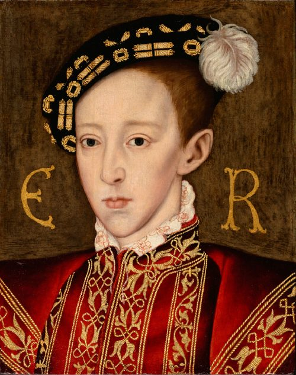

Hijo de Enrique VIII y Juana Seymour, su tercera esposa, que falleció doce días después del parto.
Cuando su padre falleció, fue coronado rey de Inglaterra en 1547, con nueve años. Su tío materno, Edward Seymour, primer conde de Hertford,
fue nombrado lord protector y duque de Somerset.
En 1547, y en nombre de Eduardo, invadió Escocia, usando como pretexto una presunta violación escocesa del acuerdo de matrimonio entre Eduardo y María I Estuardo.
Las fuerzas inglesas derrotaron a los escoceses en Pinkie, en septiembre de ese mismo año.
Tanto Eduardo como el lord protector favorecieron firmemente la reforma.
El conjunto de edictos conocido con el nombre de los Seis Artículos, promulgado en el reinado de Enrique VIII,
fue revocado y se impuso un nuevo misal, el primer Libro de Oraciones, en 1549. Los católicos se opusieron y provocaron algunos levantamientos.
En 1550 enfermó de tuberculosis.
Eduardo pasó la mayor parte de sus primeros años en Hampton Court.
Como era habitual en los niños de la realeza, Eduardo se crió en un hogar exclusivamente femenino durante los primeros años.
Su institutriz fue Margaret Bryan, que también había cuidado de los otros hijos de Enrique VIII. A pesar de la creencia popular,
su institutriz afirmó que Eduardo era un niño sano y feliz. Enrique estableció un estricto régimen de cuidados,
higiene y seguridad para asegurarse de que Eduardo siguiera así.
El 28 de enero de 1547 murió Enrique VIII. Eduardo fue coronado el 20 de febrero de 1547 en la abadía de Westminster y,
a partir de entonces, fue conocido como el rey Eduardo VI de Inglaterra e Irlanda. Como Eduardo sólo tenía nueve años cuando murió su padre,
era demasiado joven para gobernar. Antes de su muerte, Enrique nombró a 16 albaceas que actuarían como consejo de Eduardo hasta que cumpliera los 18 años.
